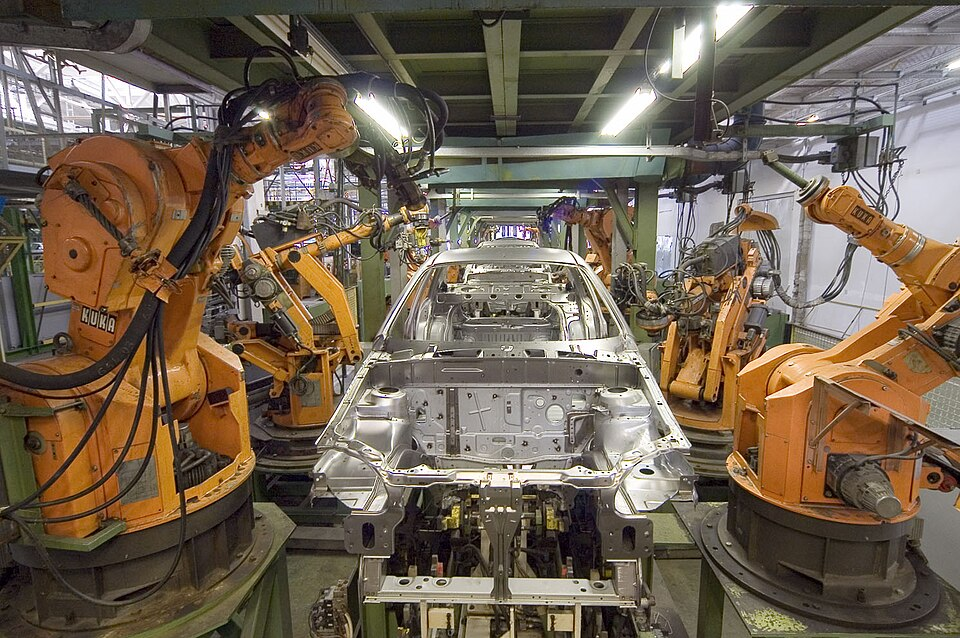
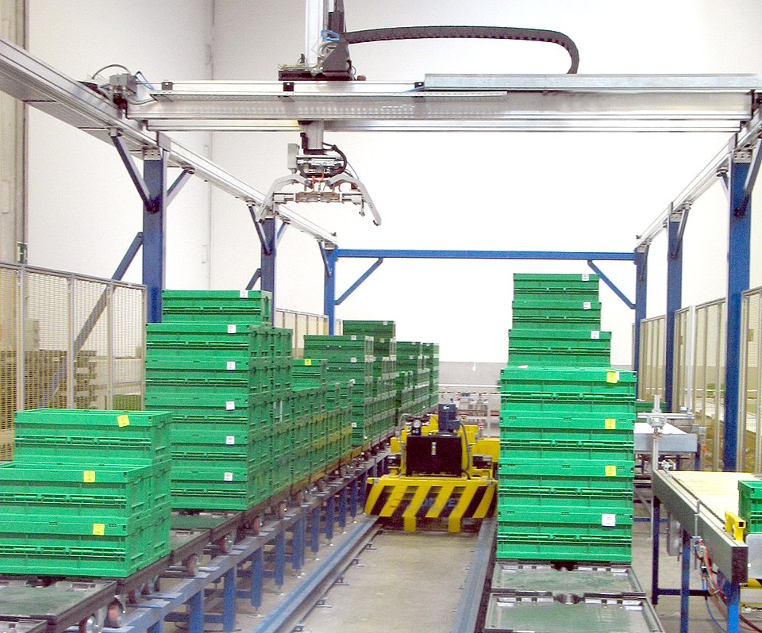
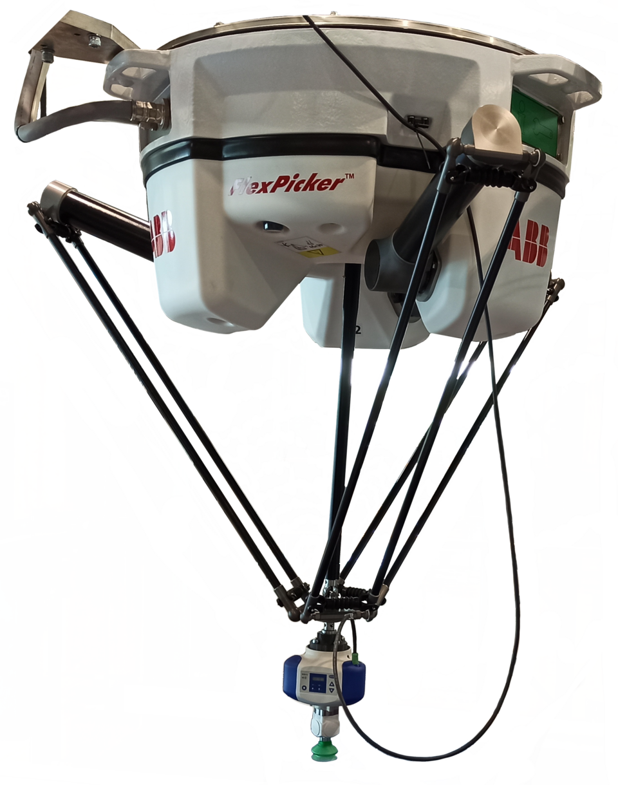
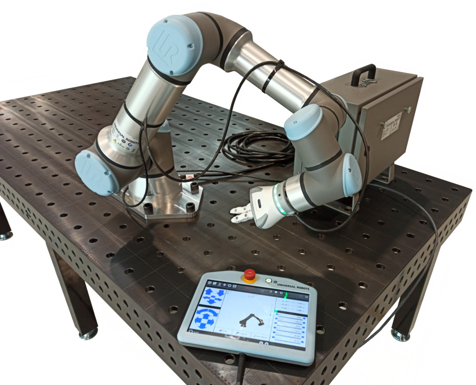
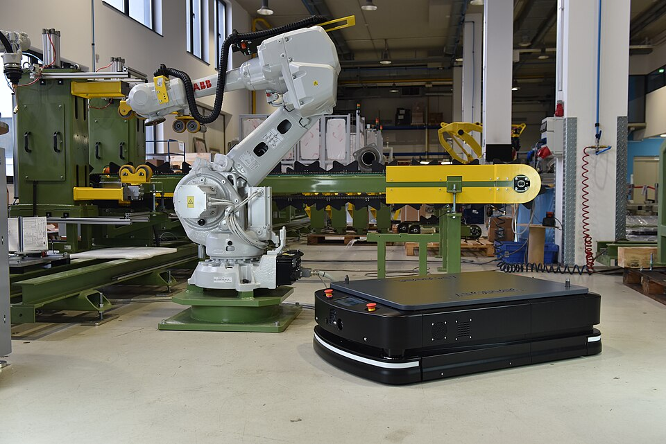
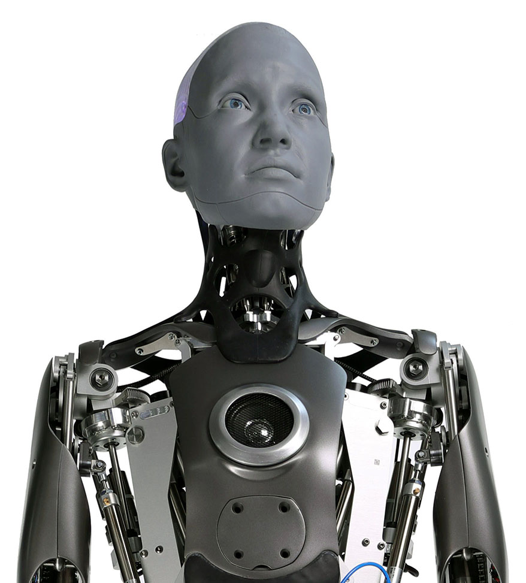
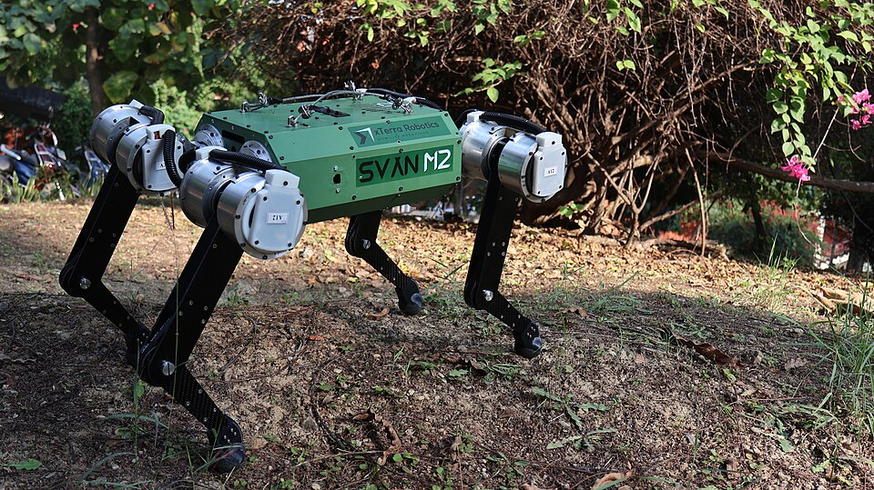
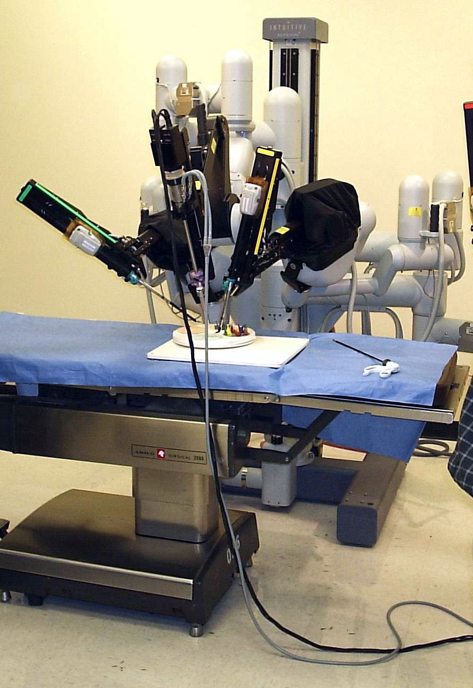

Reducers, motors, sensors and compute (NVIDIA). Sell to everyone; real bottlenecks confer pricing power regardless of which robot brand wins.
FANUC, ABB, Yaskawa, KUKA, Kawasaki — profitable industrial franchises with humanoid optionality on top.
Western AI-premium (Figure, Tesla, Agility) vs. Chinese cost-scale (Unitree, UBTECH). Winner-take-most, unproven economics.
Taxonomy anchored to ISO 8373:2021 (robotics vocabulary) and IFR World Robotics 2025. See the companion doc robotics-technology-landscape.md for the full robot-type classification. Figures are directional, drawn from industry sources cited in the footer.
Robot Types — the actual machines
The other five tabs are the technology layers inside a robot. This tab is the complementary axis: the physical robot forms you actually buy — classified by mechanical structure (the six IFR industrial types) and by mobility. A Cartesian/XYZ gantry, a SCARA, a delta, a humanoid… each combines the five layers differently. Photos load from Wikimedia Commons; a diagram shows if a photo can't load.









Photos: Wikimedia Commons (freely licensed). Robot structures per IFR / ISO 8373. See the companion robotics-technology-landscape.md for the full classification and pros/cons.
Perception — how robots see & sense
Sensing the environment and interpreting it into a usable model of the world. The central truth: no single sensor is enough — modern robots run sensor fusion, and AI is increasingly the layer that makes cheap sensors "see" as well as expensive ones.
| Sensor | Gives distance? | Range | Low light | Rel. cost | Best fit |
|---|---|---|---|---|---|
| RGB camera | No (AI-inferred) | — | Poor | $ | Recognition |
| Stereo | Yes (passive) | Short–med | Poor | $$ | Navigation |
| Depth (RGB-D) | Yes (active) | Short | Good | $$ | Grasping |
| LiDAR | Yes (precise) | Long | Excellent | $$$$ | Mapping / AV |
| Radar | Yes (coarse) | Long | Excellent | $$ | Bad weather |
Rich sensor suite (LiDAR-led) vs. vision-only (cameras + AI). As AI gets better at inferring depth from plain images, the case for expensive LiDAR weakens — yet unit demand for sensors from humanoids and AVs keeps rising even as the LiDAR industry consolidates.
Vision-only camp
Cameras are cheap and scale; the intelligence moves to software. Bet: AI closes the gap (Tesla's approach).
Sensor-fusion camp
Redundancy = safety; LiDAR gives ground-truth 3D that AI can't yet guarantee. Bet: hardware reliability wins (Waymo).
Whoever's right reshapes a multi-billion-dollar sensor market and decides whether LiDAR is a growth industry or a squeezed one.
- Image-sensor oligopoly — Sony/OmniVision sell to every camera-based robot regardless of who wins; a classic toll on the vision layer.
- LiDAR is consolidating — treat pure-play LiDAR names as high-variance; the vision-only thesis is the tail risk to underwrite.
- Watch the camera-only inflection — each step-change in AI depth estimation is bearish for premium sensors and bullish for compute/software.
- Tactile sensing is an emerging category — early, but a prerequisite for humanoid dexterity (bridges into Layer 4).
Actuation — how robots move
Converting energy into precise, controllable motion. This is the most concentrated and defensible layer in the whole stack — a handful of suppliers own the critical components, and demand from humanoids is running into real capacity limits.
Does the Japanese reducer duopoly hold, or does China/vertical integration break it? Harmonic Drive (~85%) and Nabtesco (~60%) own the precision-reducer choke point, and their capacity is a live constraint as humanoids scale — a textbook pricing-power position.
Moat holds
Precision reducers are decades of metallurgy & process know-how; hard to replicate. Incumbents capture the humanoid boom.
Moat erodes
China (Leader Drive, Sanhua) localizes cheaper reducers; humanoid makers integrate actuators in-house to escape the bottleneck.
The answer sets margins across the entire humanoid supply chain — this is the clearest single lever in the stack.
- The clearest "picks & shovels" — reducers and precision motors sell to every robot maker, humanoid or industrial; a supply constraint is pricing power.
- Watch China localization — the key swing factor; erosion of the Japanese reducer moat is the main downside to the incumbent thesis.
- Integrated-actuator makers — a faster-growing, more competitive niche; benefit from humanoid volume but with thinner differentiation.
- Low AI-disruption risk — this is hardware/metallurgy; value accrues to whoever can physically build precision at volume.
Intelligence — physical AI
The software that turns perception into action. Historically every motion was hand-programmed; the shift now underway — toward learned behavior and robotics foundation models — is the single biggest reason robots are moving from lab to deployment in 2025–26.
Who owns the "robot brain" layer — vertical hardware makers or horizontal model providers? This is the highest-uncertainty, highest-upside question in the entire stack, and the one most analogous to the LLM platform wars.
Vertical / integrated
Tesla, Figure own hardware and brain — data flywheel from their own fleet; tight hardware-software co-design.
Horizontal / model layer
Physical Intelligence, Google DeepMind sell a foundation model to all robot makers — the "Android for robots" play.
And underneath both: NVIDIA collects a toll on training/simulation regardless of who wins the application layer.
- NVIDIA is the toll booth — nearly everyone trains and simulates on its stack; the lowest-variance way to own the AI layer.
- The foundation-model layer is the wild card — highest upside, highest uncertainty; watch whether a horizontal "robot GPT" or vertical stacks win.
- Data is the real moat — real-world robot interaction data is scarce; fleets in the field (Tesla, Figure, Amazon) compound an advantage.
- This layer re-prices the others — better AI commoditizes sensors (Layer 1) and raises the value of data & compute.
Manipulation — how robots touch & grasp
The physical interface with the world: the tool at the end of the arm. Grippers for fixed tasks are mature — but the general-purpose dexterous hand is the single biggest bottleneck standing between humanoids and real utility.
Is a general-purpose 5-finger hand necessary — or is it over-engineering? Dexterous hands are where humanoid cost, fragility and unreliability concentrate. The answer shapes the humanoid bill-of-materials and timeline.
Dexterity is essential
To do human jobs in human spaces with human tools, robots need human-like hands + touch. Solve it and the market unlocks.
Simpler wins first
Most valuable tasks need only 2–3 fingers or swappable tools. Chasing full dexterity delays useful, cheaper robots.
Whichever proves true determines whether humanoids are near-term products or a longer-dated dream.
- The gating factor for humanoid utility — progress (or lack of it) on dexterous hands is a leading indicator for the whole humanoid thesis.
- Industrial grippers are a stable niche — mature, profitable, but not where the exponential upside is.
- Tactile sensing is an emerging pick-and-shovel — a prerequisite for dexterity; a small category that could inflect.
- Much value is being captured in-house — leading humanoid makers build their own hands, limiting the merchant-supplier opportunity.
Power — the endurance constraint
The most overlooked layer, and often the binding one. Energy storage and delivery cap runtime, payload, force and how autonomous a mobile robot can really be — a humanoid that runs a couple of hours per charge isn't yet an all-day worker.
Is power a solved problem or the real ceiling on humanoids? Batteries improve steadily — not exponentially like AI — so energy can quietly gate adoption even when the "brain" is ready.
Not a blocker
EV-driven cost/density gains + hot-swap and docking make runtime a manageable operations problem, not a wall.
The binding constraint
All-day humanoid work needs a step-change in Wh/kg; until then, robots are tethered, part-time, or logistics-heavy.
This layer sets the realistic duty cycle — and therefore the labor economics — of every mobile robot.
- Mostly a shared EV supply chain — robotics is an incremental demand source on top of autos, not a standalone battery thesis (yet).
- Power density is the silent gate — track Wh/kg and runtime as a reality-check on aggressive humanoid-deployment forecasts.
- Power electronics is a quieter pick-and-shovel — efficiency gains (SiC/GaN) directly extend runtime; benefits from both EV and robot demand.
- Solid-state is the optional unlock — a genuine step-change here would re-rate humanoid timelines; keep on the watch-list.
The Market — IFR's official segmentation
Before sizing anything, anchor to a source with verifiable, standards-based data rather than an invented split. The IFR World Robotics yearbooks are that anchor: they segment the market into three ISO-aligned categories and report units and market value. This is Axis A — the demand side (what robots, for what task, in what industry, where). The companion $ Value Chain tab is Axis B — the supply side (who captures the margin).
| Axis | Official IFR categories |
|---|---|
| By type (mechanical structure, since 2004) | Articulated · Cartesian / linear / gantry · Cylindrical · Parallel / delta · SCARA · Others |
| By application (3-digit classes) | Handling & machine tending (110/120) · Welding & soldering (160) · Dispensing / painting (170) · Processing — cutting / grinding (190) · Assembling & disassembling (200) · Cleanroom FPD / semi (901/902) |
| By customer industry (derived from ISIC) | Automotive (29) · Electrical / electronics (26-27) · Metal · Industrial machinery (28) · Rubber & plastics (22) · Food, etc. |
| By geography | 76 survey units → territory group → region → continent → world. In 2024: Asia 74% of installs · Europe 16% · Americas 9% |
Value caveat: IFR computes value & average unit price only for the top-5 markets (China, US, Japan, Germany, Korea) and deduces the world total. The figure is the robot unit — peripherals, software and system-integration value sit on top (see the Value Chain tab).
The Service Robots report (Ch. 5) also publishes a list of every service & medical robot producer known to IFR — a direct feeder for the company map.
- This is the verifiable anchor — units + value by type, application, industry and geography, collected from nearly all robot suppliers worldwide via national associations.
- It measures demand, not the value chain — IFR counts installations, not the split between components, OEMs and integration. That supply-side economics is Axis B.
- Value is robot-only — the integrated-system market (peripherals + software + engineering) is a multiple on top and is where integrators live.
- Next: map each IFR segment to the value-chain stages, then attach real company margins to turn the smile from an index into dollars.
Value Chain — who captures the value
The layer-tabs answer how a robot works; this tab asks who captures the value. Rather than assert a made-up ranking, it is built to accumulate evidence over time — every claim carries its source, and what isn't proven yet is flagged as a hypothesis, not a number. Today it rests on three anchors: IFR's player taxonomy, sourced concentration data, and Bloomberg SPLC supply-chain links.
World Robotics 2025 defines the industrial chain as component suppliers → robot producers → distributors → system integrators → end users — so the staging isn't ad-hoc. What IFR does not do is split the margin; it counts installations (demand). Everything below is the attempt to ground that missing economics, piece by piece.
Reducer & motor shares per Jamestown Foundation. The concentrated upstream is where pricing power should sit — the question the SPLC data below starts to answer.
| Nabtesco customer | Segment | % of Nabtesco revenue | Relationship $ (BBG) |
|---|---|---|---|
| Boeing | Aerospace | 4.73% | $28.5M |
| FANUC | Robot OEM | 2.35% | $14.1M |
| Mercedes-Benz | Auto | 2.15% | $12.5M |
| ABB | Robot OEM | 1.47% | $8.9M |
| Kawasaki | Robot OEM | 1.35% | $8.1M |
| KUKA | Robot OEM | 1.31% | $7.9M |
| Yaskawa | Robot OEM | 0.88% | $5.3M |
Why this matters: the reducer maker literally invoices FANUC, ABB, Kawasaki, KUKA and Yaskawa — the whole Big Four/Five — with real dollars. The FANUC←Nabtesco edge shows up from both sides ($14.1M), confirming the data. This is the first hard evidence under the picks-and-shovels thesis. Caveat: Nabtesco is itself diversified — aerospace/auto/rail lines are larger than robotics.
A useful screen: several "picks-and-shovels" names carry only immaterial robotics exposure. The pure-play reducer / compute names read cleaner.
| Stage | What it is | Concentration | Evidence so far |
|---|---|---|---|
| Core components | Reducers, motors, bearings, sensor chips — the bottleneck. | High | Shares 60–85%research · sells to all OEMsSPLC |
| Subsystems | Actuator modules, end-effectors, LiDAR units, battery packs. | Medium | Thin so far — batteries ride the EV chain |
| Compute & AI | Edge compute, simulation, foundation models. | High | NVIDIA near-universalresearch · $ pending |
| Robot OEMs | Arm & platform builders (= IFR "robot producers"). | Med → Low | Buy from Nabtesco / HarmonicSPLC |
| System integration | Engineering robots into a real line / warehouse. | Low | FragmentedIFR · margin unproven |
Value pools at the two IP-rich ends (components, compute) and thins through assembly and integration. So far the evidence supports the components end (SPLC: the reducer maker invoices every OEM). The compute end and the integration trough still need grounding in real margins — that's the next data pull, not a number to assert today.
Bottlenecks win
Supply-constrained components + compute sell to everyone; the humanoid brand is a crowded, capital-hungry race. Partly evidenced.
The platform wins
As with phones / cars, the integrator that nails AI + brand captures the economics and commoditizes suppliers. Unproven until a humanoid ships.
- The reducer bottleneck is proven, not asserted — Bloomberg SPLC shows Nabtesco invoicing FANUC, ABB, Kawasaki, KUKA and Yaskawa. The cleanest pricing-power node — but a Japanese-duopoly exposure to monitor vs. Chinese entrants.
- NVIDIA is the brand-agnostic toll — concentration is clear; the dollar linkage into robot OEMs is the next thing to evidence.
- Watch the purity trap — Moog, Timken and Tesla screen as robotics but their disclosed business is aerospace, industrial and autos. Pure-plays read cleaner.
- Still open: pool sizing and the humanoid economics — SPLC can't see Optimus-class BOMs yet. To be grounded when the data arrives.
Companies — the universe, hung on the value chain
This is where the framework pays off: every notable player mapped to where it sits in the value chain, tagged public vs. private and by geography. It is the candidate universe for company-level deep-dives — not yet financials, just the map. Stages inherit the value-capture posture from the smile, so you can read pricing power at a glance.
Stages 1–3 (components, subsystems, compute/AI) sit upstream of IFR's count — IFR names "component suppliers" but doesn't size them. Stage 4 (robot OEMs) = IFR's "robot producers", sub-grouped here by IFR-style segment (industrial · mobile · humanoid · consumer · medical). Stage 5 = IFR's "system integrators". So the roster below is anchored to IFR §1.13 players, with the economics IFR doesn't provide.
The most fragmented, services-like stage — mostly private, regional engineering shops. Public exposure is via diversified automation names, not pure-plays.
- The public "picks & shovels" cluster is the cleanest entry — reducers (Japan), compute (NVIDIA), sensors — where concentration meets a listing.
- The humanoid frontier is a private-market map — Tesla and UBTECH are the main listed pure-ish plays; the rest is venture. Watch for IPOs (Unitree, Figure).
- Geography is a real axis — Japan/Europe own components & arms, the US owns compute/AI, China is scaling both low-cost components and humanoids.
- Next step: pick a shortlist from here and open company-level deep-dives — pulling real financials (revenue, gross/op margin, growth) to put dollars on the smile.
- ISO 8373:2021 — Robotics — Vocabulary (ISO/TC 299). Governing definitions of robot / industrial / service / medical robot. iso.org/standard/75539
- International Federation of Robotics (IFR) — World Robotics 2025. ifr.org
- IFR — World Robotics 2025, Sources & Methods (Industrial: classifications by type/application/industry/geography, §1.13 market players; Service: AP/AC application classes, Ch. 5 producer list). Industrial · Service
- IFR press — Global robot demand doubles over 10 years (US$16.5 bn / 542k units, 2024). ifr.org
- Jamestown Foundation — reducer & motor market shares (Harmonic Drive, Nabtesco, Maxon). jamestown.org
- TechCrunch — LiDAR consolidation (Ouster color LiDAR / Velodyne). techcrunch.com
- Robotics 24/7 — Orbbec & the RealSense void (depth cameras). robotics247.com
- EVS Intelligence — top humanoid companies 2026. evsint.com